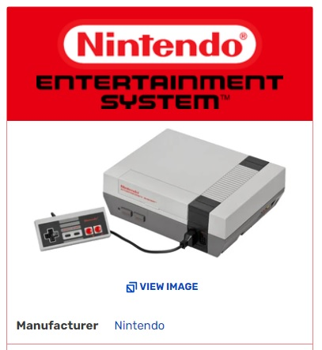
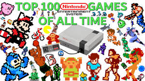

|

|
The Nintendo Entertainment System (often abbreviated as NES), released in Japan as the Family Computer(JP) (abbreviated to Famicom(JP) or FC) and in Korea as Hyundai Comboy (Korean: 현대 컴보이 Hyeondae Keomboi) is an 8-bit video game console produced and distributed by Nintendo. The system has been sold to retailers in most of Asia, North America, Europe, and Australia, and it plays games on interchangeable cartridges that vary by shape depending on the region the system was released in. The NES helped revitalize the North American video game industry following the video game crash of 1983. The system's use of interchangeable cartridges allowed video game companies other than Nintendo to produce and manufacture games for the system. However, Nintendo would only allow these third party companies to make the games on their terms. Nintendo's use of third party licensing would also be applied to their future consoles. History and DevelopmentThe NES is an iconic system that consisted of vast advancements, impressive video games and the industry's most lucrative franchises. Its importance to video games is arguably unparalleled having saved the US industry from collapsing following Atari's infamous crash in the early eighties. The NES propelled video games to new heights when it came to game design, save functions, story involvement, and character control. With the NES came the modern model for third party developers on video game consoles and licensing of video games. Nintendo had made a name for itself by releasing games such as Donkey Kong, the Game & Watch series and the Color TV Game series. Mario had become one of the best known video game characters and Nintendo was well on their way to becoming the industry leader. After the arcade boom companies went onto creating home consoles that would let consumers play their favorite games at home, among other games made exclusively for the consoles. Nintendo had licensed their popular video games to other systems, and Donkey Kong rose to become one of the most popularly ported video game of the early eighties, appearing on ColecoVision and Atari systems, among others, in the North American market. The controller for the NES was different from the joysticks that older consoles had. It had a D-pad button that could go up, down, left, or right. It also had A, B, Select, and Start buttons. The NES could use up to two controllers for multiplayer games. There were also other types of controllers that could be used with the NES. |
First party titlesNintendo was the leading provider of video games on the Nintendo Entertainment System as would be expected. Their video games were among the best that the system had to offer, and few compared in quality at the time. Naturally Nintendo's games sold the best. The first batch of games were generally remakes of arcade titles including the likes of Donkey Kong, Donkey Kong Jr., Mario Bros. and Donkey Kong 3. Eventually, though, Nintendo would start to develop original titles such as Clu Clu Land, Excitebike, Ice Climber, Mach Rider, Balloon Fight, Mike Tyson's Punch-Out!!, and Wrecking Crew. Third party supportNintendo wasn't the only one supplying retailers with video games for their system, as would be expected. Over the years Nintendo would gradually gain the support of companies, some new, and some who were dramatically hurt by the crash of Atari. Hudson Soft would be the first third party company on board for the Famicom, and would release their first game, Lode Runner, soon thereafter. A few months after Hudson Soft was deemed the first third party developer, Namco jumps on the cash train in September of 1984 and would release Xevious a month and one day later. |

|
KEN Famicom International Traders